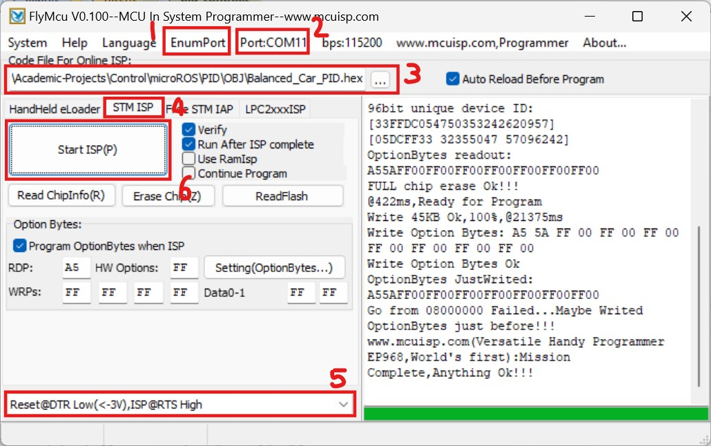
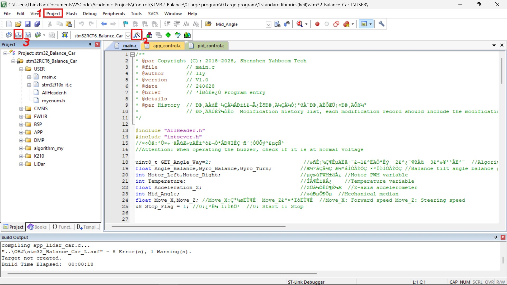
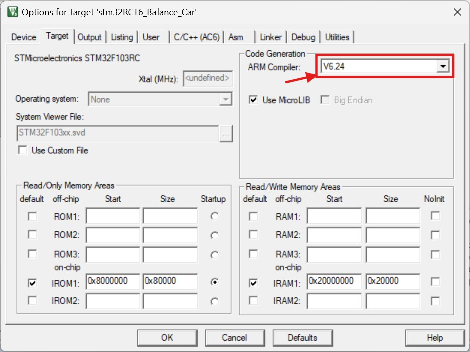
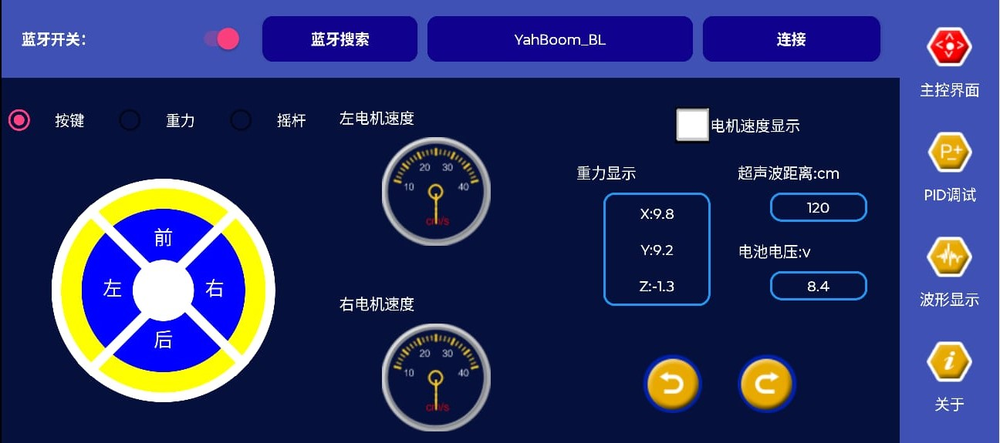
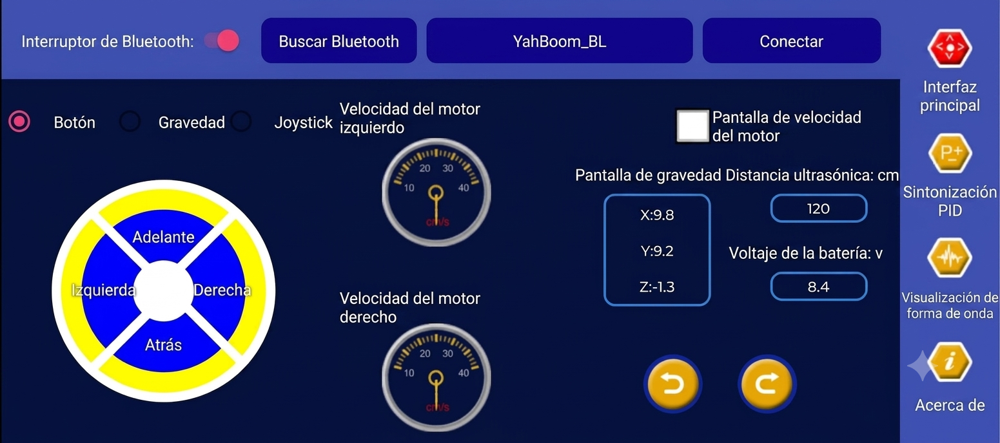
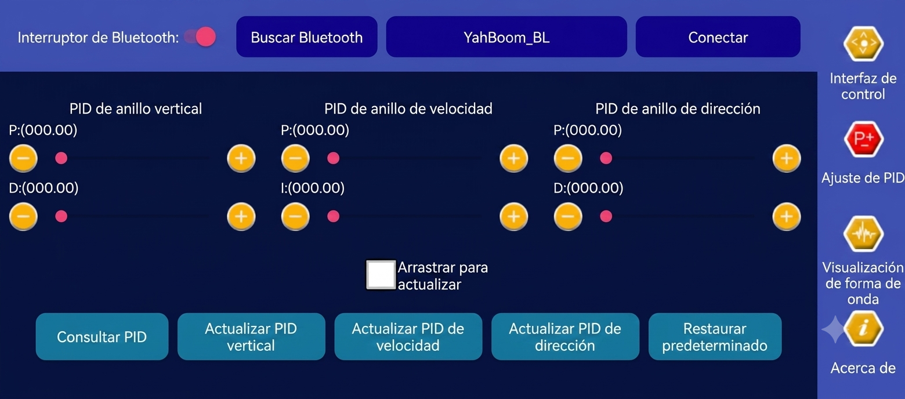
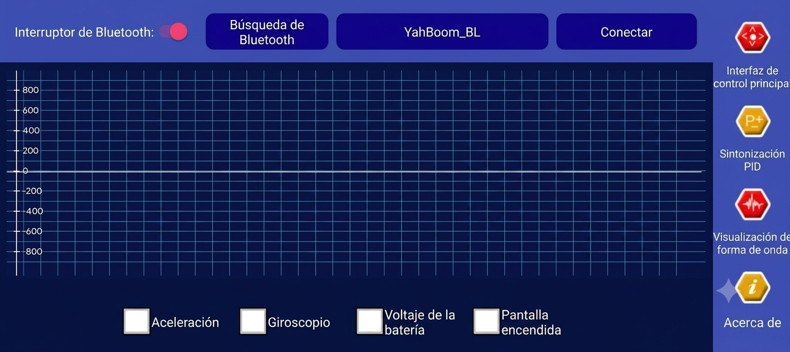

Proyecto Control
Yahboom microROS - Robot de auto-balance
- Alejandro Jiménez Zabala
- Jose Luis Ocoro Banguera
- Proyecto Control
Documentación
Página web Yahboom
Secciones de interes
- 03-0: Inicio rápido
- 03-1: Cargar firmware — Instrucciones para instalación de FlyMcu
- 12-01-01: Instalación de MDK-ARM — Instrucciones para instalación de Keil uVision 5 y compilador.
Software necesario
FlyMcu
Software para subir los archivos compilados .hex a la tarjeta STM32 del robot. Para hacer modificaciones del controloador, solo es necesario modificar el firmware de la STM32.

EnumPortpara actualizar la lista de puertos USB dado el caso que no reconozca automáticamente la conexión por USB al STM32.- Seleccionar el puerto al que está conectado el robot (
USB-SERIAL CH340K). - En
...seleccionar el archivo .hex que se desea probar en la ruta que está guardado en el computador.Tener en cuenta:Los archivos .hex son guardados en la carpeta "OBJ" de las carpetas de los proyectos despues de ser compilados.
- Pasar a la pestaña de opciones
STM ISP - En el menú desplegable seleccionar la opción
Reset@DTR Low(<-3V),ISP@RTS High - Presionar el botón
Start ISP(P)
Keil uVision 5
IDE para las ediciones de los controladores, y compilación de los proyectos.

- En en el boton de la barra superior
Projectse encuentra la opción para abrir un proyecto trabajado como los descargados por el fabricante.Tener en cuenta:El archivo que abre el proyecto en el software Keil uVision es de extensión
.uvprojx, el cual se encuentra en la carpeta "USER" de los proyectos. - Ejecutar el comando
Options for target, el cual abre la siguiente ventana:

En esta ventana se debe configurar elARM Compilerque se haya descargado en la instalación del software (Si se siguieron los pasos correctamente, debería incluir dicho compilador, de lo contrario, se puede descargar por aparte en la página oficial del fabricante).
Dado el caso que se trabaje un proyecto de más de 32 kB se puede generar un error de límite. Para solucionar el error del límite de 32 KB al compilar en Keil μVision, se tiene un video aportado por el compañero Dilan Mateo Torres, con este procedimiento podrán compilar proyectos más grandes usando la Community Edition, sin necesidad de obtener una licencia de pago o de migrar todo el proyecto a STMicroelectronics Cube IDE. - Despues de hacer las ediciones necesarias a los códigos, se podrá ejecutar el comando
Build, para la reconstrucción del proyecto, y obtener el archivo .hex que requiere el software FlyMcu.
El procedimiento de compilado y flasheo de proyectos puede apreciarse en el siguiente video.
Aplicación movil
- BalanceBot - Solo disponible en Android
La aplicación oficial para descargar se encuentra en lenguaje chino, a continuación se ve un pantallazo de la pagina principal de la aplicación:

Nos apoyamos de herramientas de inteligencia artificial para traducir los pantallazos de la aplicación y facilitar la navegación a través de esta:

Para poder hacer pruebas de Bluetooth del robot, se deben conceder los permisos de acceso que solicite la aplicación.
Ya dentro de la aplicación, se podrá presionar el botón Buscar Bluetooth, seguido del botón Conectar, al mostrar en el recuadro central de la barra superior el nombre del equipo (en el caso de la imágen "YahBoom_BL") significará que se pudo conectar satisfactoriamente, y se podrán controlar los movimientos del robot usando el celular.
Si se encuentra en la cercanía de otro equipo robot MicroROS, con características de conexión bluetooth similares, se podrían generar interferencias de conexión complicando el manejo con el celular
Se tiene tambien otras dos vistas de interés entre la aplicación, para la sintonización PID, y para la visualización de forma de onda:


Información adicional previo a diseños
Datasheet de motor
Modelo MD520Z30_12V (JGB37-520, reducción 30:1)
| Parámetro | Valor |
|---|---|
| Modelo | MD520Z30_12V |
| Voltaje nominal | 12 V |
| Tipo de motor | Escobillas (imán permanente) |
| Eje de salida | 6 mm, tipo D excéntrico |
| Reducción de engranajes | 30:1 |
| Velocidad antes de reducción | 11000 RPM |
| Velocidad después de reducción | 333 ± 10 RPM |
| Torque nominal | 3.3 kg·cm |
| Torque de arranque (stall) | 4.8 kg·cm |
| Corriente nominal | 0.3 A |
| Corriente de arranque (stall) | 3 A |
| Potencia nominal | ≤ 4 W |
| Peso del motor | 150 g ± 1 g |
| Tipo de encoder | Hall incremental, 2 fases (AB) |
| Voltaje de alimentación encoder | 3.3–5 V |
| Pulsos por vuelta (motor, un canal) | 11 |
| Cuentas por vuelta (eje de salida, decodificación x4) | 30 × 11 × 4 = 1320 |
| Interfaz | PH2.0, 6 pines |
Parámetros físicos
Los siguientes parámetros físicos fueron obtenidos de datos de simulación y código proporcionado por el fabricante.
| Parámetro | Símbolo | Valor |
|---|---|---|
| Masa de cada rueda | 0.035 kg | |
| Radio de rueda | 0.0336 m | |
| Inercia de la rueda | kg·m² | |
| Masa del cuerpo | 0.930 kg | |
| Distancia CM al chasis | 0.0383 m | |
| Inercia del cuerpo (pitch) | kg·m² | |
| Ancho de vía | 0.1612 m | |
| Gravedad | 9.8 m/s² |
Controlador LQR
Para este controlador, aparte de los combios a las constantes que se mostrarán a continuación, tambien se hicieron cambios a la variable target_angle_x, y se agregaron límites mínimo y máximo (clamping) a la posición x_pose en el código.
Constantes K de fábrica
float K1= -62.0484, K2= -73.3232, K3=-361.4617, K4=-35.9024 , K5=15.8114, K6=15.8114;
float K5OLD=15.8114, K6OLD=15.8114;
Constantes K diseñados
float K1= -3.3991, K2= -14.5204, K3=-300.4103, K4=-15.3126, K5=0.06798, K6=0.26011;
float K5OLD=0.11775, K6OLD=0.343274;

Controlador PID
Para el caso de este controlador, en el código proporcionado por el fabricante, se tienen 3 lazos:
- Balance / Angulo: Lazo PD
- Velocidad: Lazo PI
- Giro: Lazo PD
Para el caso del controlador de giro, a éste no se le aplican cambios, siguiendo la sugerencia del fabricante que éste puede ser dejado sin alterar, ya que solo variaría la velocidad en la que gira el robot, por lo que el enfoque está en el diseño de los dos primeros lazos (Balance y Velocidad).
Constantes K de fábrica
//PD
//Vertical loop PD control parameters
float Balance_Kp =10200;//0-288 Range 0-288
float Balance_Kd =78; //0-2 Range 0-2
//PI
//PI control parameters for speed loop
float Velocity_Kp=7000; //0-72 Range 0-72 6000
float Velocity_Ki=35; //kp/200
Constantes K diseñados
//PD
//Vertical loop PD control parameters
float Balance_Kp =25.57;//0-288 Range 0-288
float Balance_Kd =0.864; //0-2 Range 0-2
//PI
//PI control parameters for speed loop
float Velocity_Kp=71.95; //0-72 Range 0-72 6000
float Velocity_Ki=44.97; //kp/200